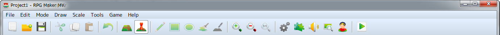

The Menu Bar

Details regarding the items found in the Menu Bar in the Main Window are as follows.
[File] Menu
- New Project
- Creates a new project. If a project is already opened, it will be closed upon creating a new project.
- Open Project
- Opens a saved project, allowing you to edit your game. Select your [Game] (or [Game.rpgproject]) file by selecting it inside its project folder using the [Open] window.
- Close Project
- Closes the currently opened project. A confirmation window will appear if there is data which has not been saved. Click [Yes] to close the project after saving and click [No] to close the project without saving.
- Save Project
- Overwrites the contents of the project you are currently editing.
- Deployment
- Builds your project in the platform format selected. For more information, please view [Output Formats].
- Exit RPG Maker MV
- Closes the program. Just like [Close Project], a confirmation window will appear if there is any unsaved data.
[Edit] Menu
- Undo
- Allows you to undo the action that you just performed and return the project to its previous state as it was 1 step prior. You can undo up to 20 actions.
- Cut
- Deletes data which you have selected such as map data and map events and copies it to the clipboard.
- Copy
- Copies data such as map data and map events to the clipboard.
- Paste
- Adds the contents of the clipboard as new map data and map events.
- Delete
- Deletes data such as the map data and map events you have selected.
[Mode] Menu
- Map
- Switches to the Map Design Editor Mode.
- Event
- Switches to the mode that allows you to create and edit map events. Lines which are determined by the size of tiles are displayed in the Map View.
* Select the [R] tab in the Tileset to enter the Region Editor Mode where you can define the region where enemy groups will appear (areas where you encounter enemies).
[Draw] Menu
A tool for drawing on tiles is available in the Map Editing Mode. Please refer to [Editing Map Designs] for more information.
[Scale] Menu
- Zoom In
- The Map View will get bigger each time you select Zoom In.
- Zoom Out
- The Map View will get smaller each time you select Zoom Out.
- Actual Size
- Displays map in standard size (displays at same magnification).
[Tool] Menu
- Database
- Opens the settings window for the [Database] where you can create/edit elements such as your characters and items.
- Plugin Manager
- You manage your plugins here. For more information, please view [How to use Aid Tools].
- Sound Test
- You can play test sounds loaded as asset files in your project. For more information, please view [How to use Aid Tools].
- Event Searcher
- You can search for events using various conditions. For more information, please view [How to use Aid Tools].
- Character Generator
- Combine pre-made parts to make face graphics, walk characters, and battlers. For more information, please view [How to Use Aid Tools].
[Game] Menu
- Playtest
- Starts a Playtest of your game. For more information, please view [How to use Aid Tools].
- Open Folder
- Opens the folder where your project is saved. Use this when you want to check the location of your project folder or when you want to manually move files in your project folder.
[Help] Menu
- Contents
- Displays the Help window (this window).
- About
- Shows version information about this software.